LV System of Chimera Evoluzione¶
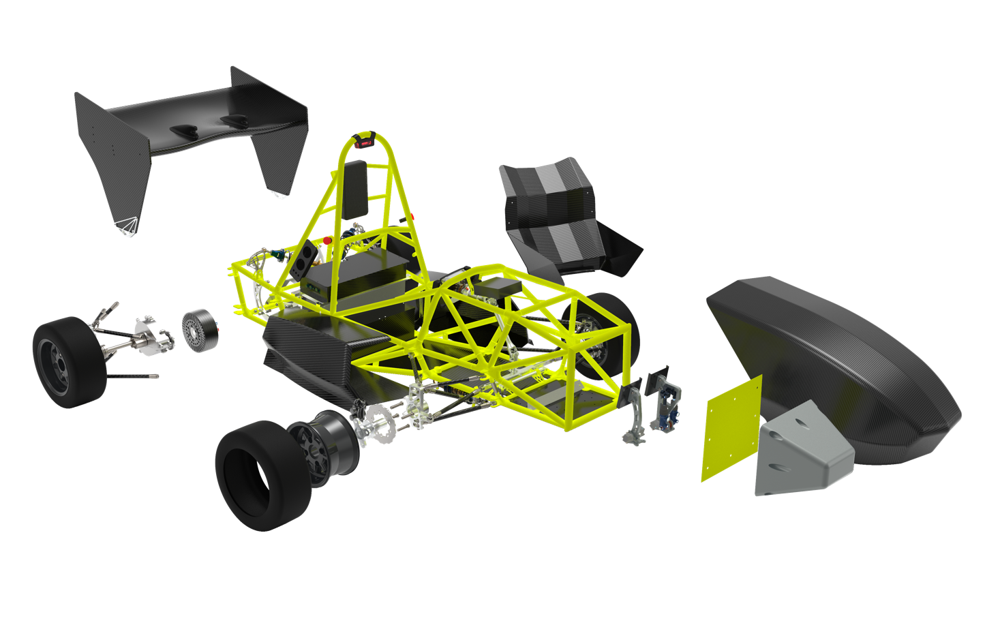GLV Battery¶
We started last year from a custom made 14p4s battery pack composed by single Samsung 25R batteries. This batter pack contains enough energy to supply all the Low Voltage systems for at least two endurance races. This year we choose to substitute it with a smaller and powerful one. Here an entire render of the new GLV battery
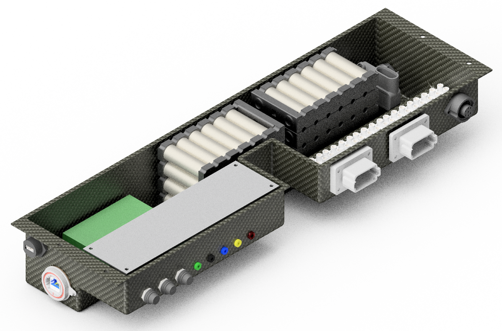So we choose to substitute it with eight 6p1s Energus Module which are made by Sony VTC5 cells. The battery configuration now is 12p4s and thanks to the higher energy density of the Sony VTC5 we were able to save 20% of weight while keeping almost the same amount of energy stored. Io order to correctly supply all the Low Voltage devices we use 3 DC/DC converters. The first one generates +12V DC which are necessary in order to supply the inverters and the shutdown circuit. The second one generates +5V DC for all the ECU’s and sensors while the last one generates +24V DC for the cooling system. The overall power consumption is 380W. Here a scheme of the GLV battery, the BMS and the power management part:
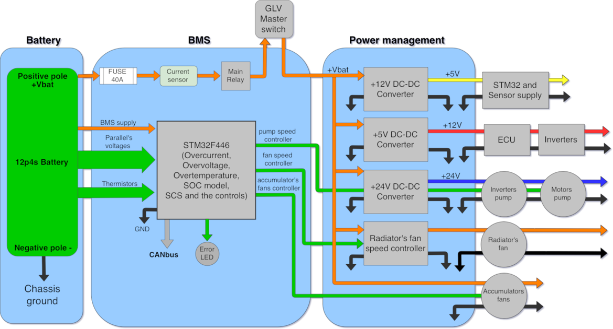Low Voltage BMS¶
The brain of the GLV battery is the Battery Monitoring System (BMS). Last year we used uPython board while this year we choose to use a faster and more powerful STM32F446 and on top a it a custom PCB which includes: one CAN-Bus transceiver, 4 Sallen-key Buttherworth filter in order to drive the pumps velocity, 3 +5V PWM output which are used for driving the accumulator fans, 6 external thermistors which monitor the GLV battery temperature, one SD card slot which can be used in order to store data and one fixed 5V DC/DC converter which guarantees a stable and independent supply . Here the render of the Low Voltage BMS Shield
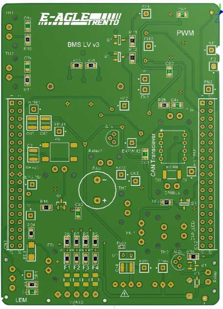 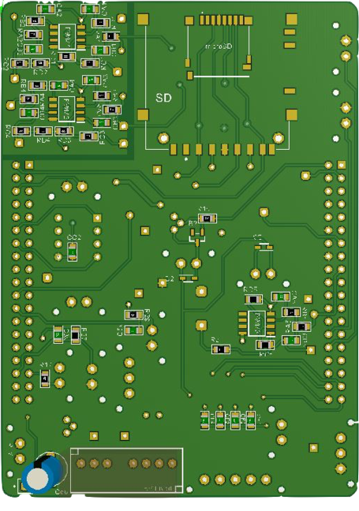The main role of the BMS is to keep under control the voltages, temperatures and the current coming from the battery then send it through the CAN-Bus. The BMS also manage the cooling system by reading the CAN temperature messages from inverters, motors and accumulator then, set the speed of the two fans and the two pumps in order to kept them well cooled.
ECU¶
Since the beginning, ECU’s (Electronic Control Unit) role was to handle the whole communication between devices deployed in the car and to take care of the control of the vehicle. For these reasons we decided to use a NI sbRIO-9627 developed with LabVIEW
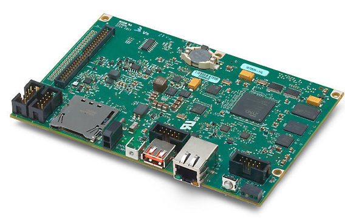The sbRIO-9627 guarantees powerful hardware while LabVIEW allowed us an easy and fast way to program it. ECU was composed by 2 states: IDLE and RUN, during IDLE the car was turn on but cannot move, instead during RUN the car can move. RUN was structured in 3 different phases: acquisition data, management data and transmission. At the beginning of the acquisition period, the sbRIO wrote messages to all the devices to allow them to send data so it could store them. During the management part there was a complete analysis of data collected. If we were in the running state then the sbRIO enters in the transmission part so it sent via CAN-Bus the desired torque to the inverters. The right torque command had to be decided together with the control of the vehicle, but since it hadn’t been implemented yet we used direct transmission. Even if it wasn’t still online we knew that we had just 10 milliseconds to run a cycle of our software to have a realistic output of torque but, after few tests, we understood that we were out of time. Furthermore we noticed that LabVIEW had some problems with the CANbus so we decided to change device. So we decided to move to the microcontroller STM32F446. This one is very cheap and fast enough for our application. The only drawback was that we had to rewrite the architecture of communication. We refused to maintain a question/answer communication between ECU and the other devices so, now, all online devices write via CANbus their messages every a certain amount of time. This allow to increase the amount of messages received. Here the timing scheme that we applied for the new architecture:
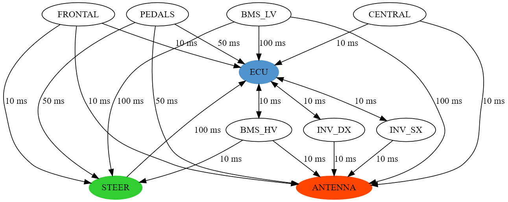Another limit of the sbRIO 9627 was that it is not able to implement CAN-Bus interrupt functions so, most of the time we lost CAN messages causing car instability. Now, thanks to the CAN interrupt function of the STM32 microcontroller the ECU save and store, in a circular FIFO, each CAN message also when a task is running. Once the current task is finished the ECU starts to elaborate the older messages stored in the FIFO. With the new hardware we decided to change the state machine as well so we implemented a Finite State Machine composed by 4 states: INITIALIZATION, IDLE, SET-UP and RUN. The following image shows our state machine:
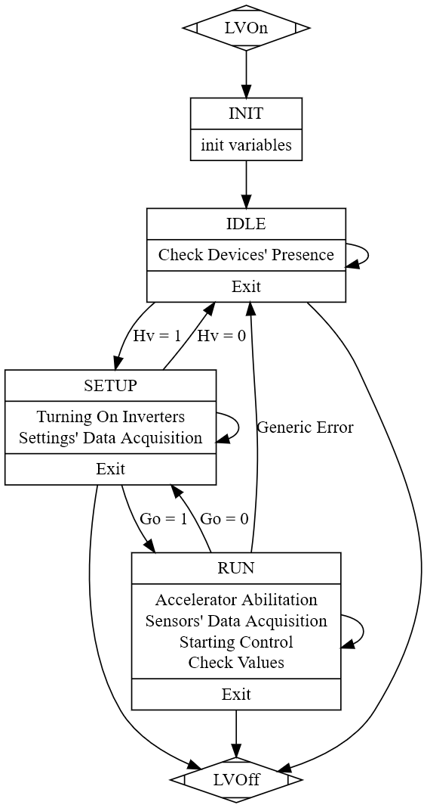The IDLE state is useful to understand which device is online and working. During this state the Tractive System is turned off. When driver wants to turn on the car ECU gets a message and forward it to the High Voltage BMS (BMS_HV). If the High Voltage BMS confirmed that the car can be turned on then the ECU enable the driver to switch to the SET-UP state. The driver follows the procedure using the steering wheel so it can see if the procedure occurred correctly. During SET-UP, the driver can switch on inverters. After the request, the ECU controls inverters temperatures and if they are good it switch them on. When these ones are switched on the driver can go to the RUN state. Whenever a fault happens during SET-UP or RUN the ECU send a message to the High Voltage BMS which turn off the whole car then the ECU return to the IDLE state. The ECU switch off the car when over-temperature of inverters or motors occurred or for every Safety Critical Signal (SCS) received by the other devices. Thanks to the steering wheel the driver is able to set the amount of the maximum power that the car can generate. Now there aren’t any vehicle stability control cause we didn’t have time to implement it but next year we want to implement and test torque vectoring control and yaw rate control. Furthermore the driver will be able, from the steering wheel, to choose which type of control use. None, torque vectoring, yaw rate control or both. Another improvement will be the use of dual-core device, this will be helpful because it will allow us to run long math computation (vehicle stability control) on one core while in the other one the FSM.
Sensors and telemetry¶
Last year our sensors and telemetry part was based on the micro python board. This one includes CAN bus communication, microSD card slot, 3-axis accelerometer and 3x 12 bit ADC available on 16 pins. Here a picture of the microPython board:
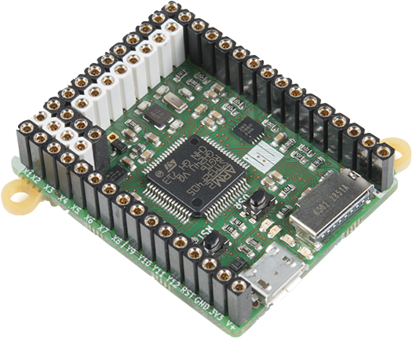Thanks to Python we were able to design our first working architecture in just few months but the main problem was that most of the time the micro controller was not able to meet our time constraints. So for this reason we decided to use the STM32-F446 Nucleo board. Here a picture of the board that we used:
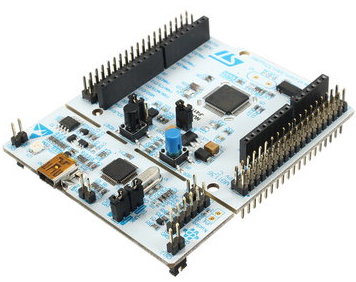In order to integrate all the sensors that we need we design PCB which are plugged to the Nucleo boards thank to its Morpho connectors. These PCB contain, RC filters, voltage divider, IMU module, GPS module, Radio module and SD card slot. Here a picture of the PCB that can be used as IMU, GPS and for the throttle pedal.
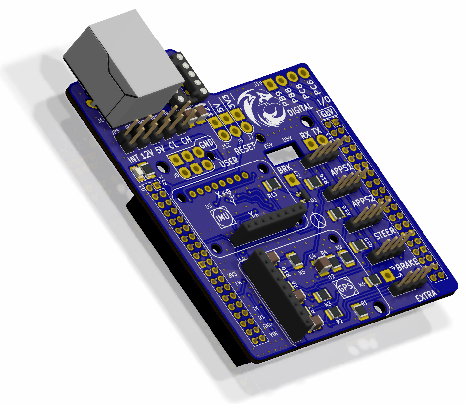Next year we want to develop our own PCB which contains not only the sensors but also the microcontroller, this will allow us to reduce its volume up to 60%.
Sensors¶
Chimera Evoluzione has many sensors deployed all over. The sensors are then managed by 4 microcontroller board. The first board is placed near the pedals and it aquires values from the throttle potentiometer and brake pedal and then it actuates the brakelight. The second board is placed and the steering column and it acquires the steering angle and the data coming from the IMU. The third board is placed in the center of mass of the car and it acquire data from the IMU and the GPS. The last board is placed behind the headrest and is the one that logs all the data that pass through the CAN-Bus and send it to the paddock thorough a radio module. The GPS, the IMU, the steering angle and the motor’s resolver are now only logged but in the future they will be used for the vehicle control stability. Once the raw data are acquired they are elaborate through median filters in order to reduce their noise and then they are send through the CAN-Bus at 1Mb/s of speed. Compared to the microPython board here we were able to modify and optimize the CAN-Bus function in order to achieve better performance like message interrupt functions.
Antenna and logging¶
To log the data present in the CAN-Bus of the car, we use a STM32-F446RE board, just like the ones used for our sensors. We designed our own shield for the board, and we decided to put a microSD slot on it, so that we can save all of the data quickly and efficiently. Here a picture of the self-develop PCB
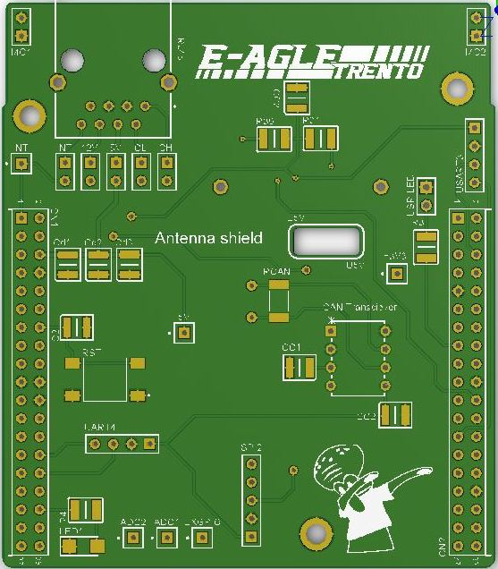The board supports up to 4GB microSD cards, and, although it may not seem much, it’s actually about 400 hours of data. Between each session we can easily remove the microSD card and download the data to a computer, from which we can analyze what we just gathered. We developed our own matlab scripts to parse and plot the data collected. On the same shield we also added a connector for the antenna module RTX-LONG-RANGE 869MHZ, here in the following picture.
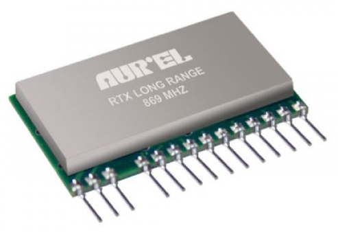Although fairly slow (it reaches speeds of about 1kbps), it’s a very useful tool to track the status of the car during both testing and races. Through the antenna we can see the temperature and voltage of both the LV battery and HV accumulator, as well as the temperatures of both inverters and the power being requested to the car (or, in short, the motor map chosen by the driver). All of this allows the driver to focus on driving, without continuously answering to the paddock the status of the car. We also use the antenna module during the tech inspections, to send the voltage and temperature of each cell inside the HV accumulator to a PC. This procedure is usually done through a cable, but we decided to use our wireless solution as it is easier to use.